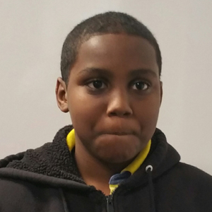

Welcome to My Profile

Salim Salim
Hello my name is Salim Salim and I love anime.
Reason Why I Love Anime
The reason why I love anime is, because it has a variety of subjects and the way the animation looks look cool. For example, Dragon Ball Z, Dragon Ball Z is based on a saiyan that lives on, as a kid he bumped is head and he thinks he's a earthling and his name is Goku.
Anime genres
There are variety of animes. Like another example, Naruto. This anime is more of a combat anime. Combat animes are animes where they fight most of the time. Another type of anime is, Attack On Titan, this anime is a mythical/combat genred anime. There's a teenager named Aron where he has an ability to turn into a titan to kill the other titans,which are bad.